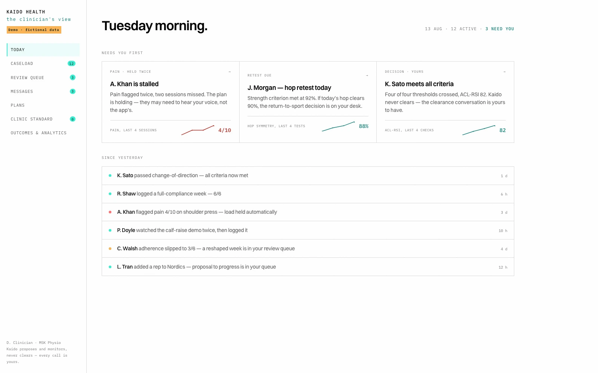
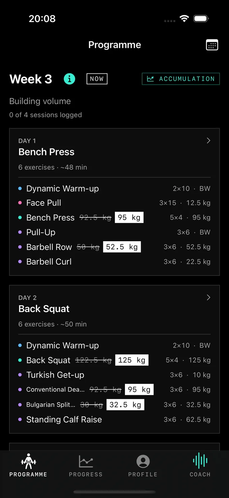
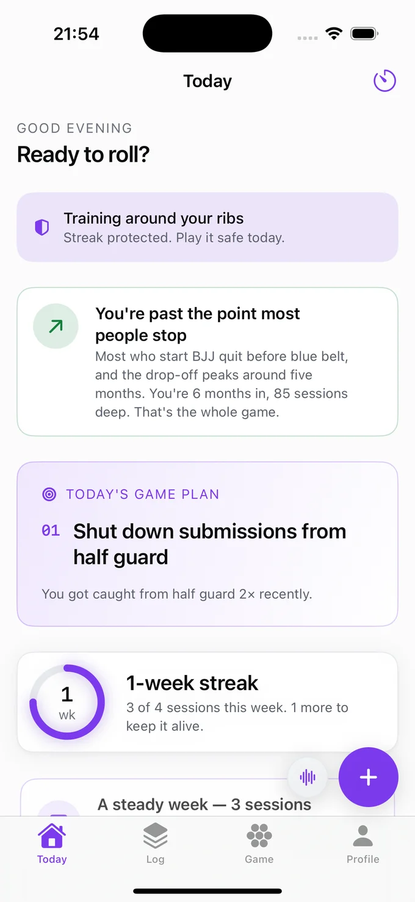
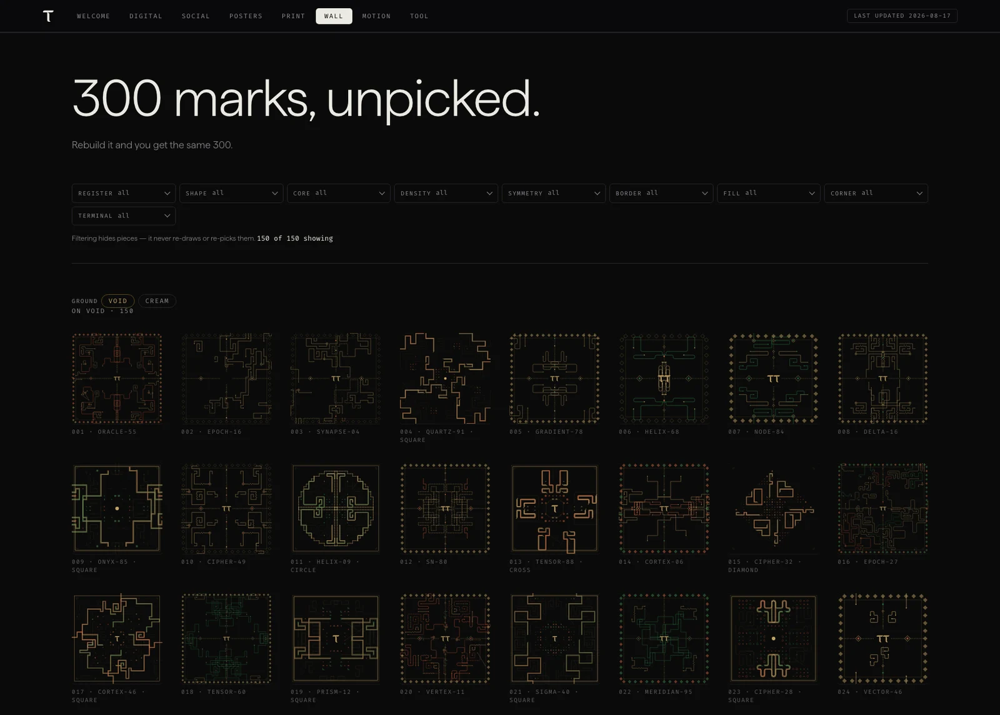

No theatre. Just the product.
cyber:cyber is a product design lab. We design the brand, the interface, and the code — and we build it. A few clients a year.
The proof
Three products of our own, and the rare client good enough to earn the same team. Below is one of them.

It proposes and monitors a plan between visits — and never clears the patient. That call stays with the clinician.

You rolled hard, not lifted heavy — so today’s session already knows, and eases off.

The same mistake caught you seven times this month — so now there's one drill built to fix it.

Type in a name, and the engine draws that name's own mark — the same one, every time, forever.
The offer
You're not buying hours. You're buying the result, shipped — fixed scope, fixed price, in weeks not quarters.
Who it's not for
Questions
The short version — what we are, what it costs, and who it's for.
Why bring in an outside expert?+
A full-time hire has to learn your product and the craft at the same time, on your clock. An outside expert has already made these calls, on other people’s products — what’s left is applying that judgment to yours, not developing it.
Can one person do all of it?+
Brand, interface and production code used to need three people because the tools needed three specialists. They don’t any more. What hasn’t got easier is deciding what to build — and that’s exactly the part that gets lost in a handover instead of held by one person end to end. This model fits ambiguous, early-stage work; it’s the wrong shape for a build with multiple teams, real-time systems and compliance to coordinate, and it won’t pretend otherwise.
What happens if the scope changes halfway through?+
It usually does — the sharpest brief still meets reality partway through. A change gets scoped and quoted on its own, in a day, not fought over and not quietly absorbed into the original number. What’s fixed is the standard the work is held to, not the plan.
What if I only need design?+
That’s the Design Block — a week of brand or interface work, scoped and priced on its own. Not everyone needs the rest.
How fast is fast?+
A Design Block is a week. A complete build is weeks, not quarters. Speed on its own isn’t worth much — every studio claims it now. What matters is not being back here in six months redoing it.
What if you’re the bottleneck?+
A fair risk to name. It’s why scope and price are fixed before anything starts, and why work lands continuously instead of in one handover at the end — if something’s off, you find out in week one, not month three.
Who does the actual work?+
Dan Andrews — a designer in London, a decade across brand, interface, motion and interaction, including Spotify, Epic Games and Dell, and early-stage teams before that. There’s no bench, and nobody to hand you off to. More at iamdanandrews.com.
Dan Andrews
A designer in London. A decade of product, brand, interface and motion — Spotify, Epic Games, Dell — and early-stage teams before and since.
I believe product is the argument. Brand, interface, motion — that’s how you make people feel it’s true.
Most products don’t fail because the idea was wrong. They fail in the gap between the person who decided what to build and the person who built it — something gets lost there, every time, and the thing ships a little hollow.
So I don’t hand it off. I carry the decision the whole way through, because the work worth doing is never simple, and somebody has to actually understand it, not just manage it.
iamdanandrews.com ↗